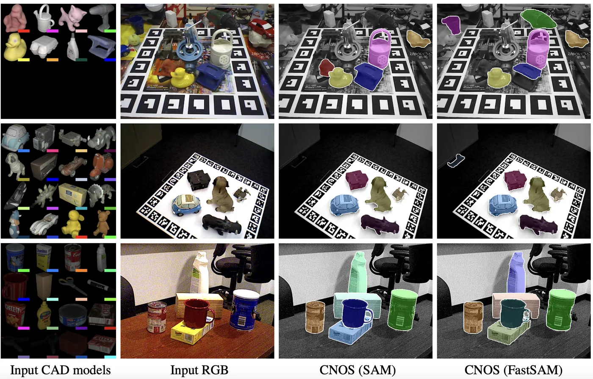
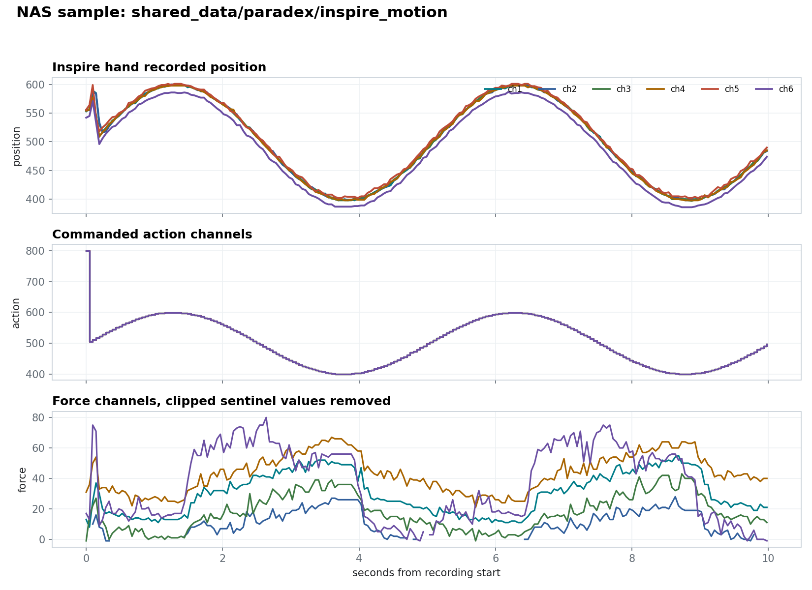
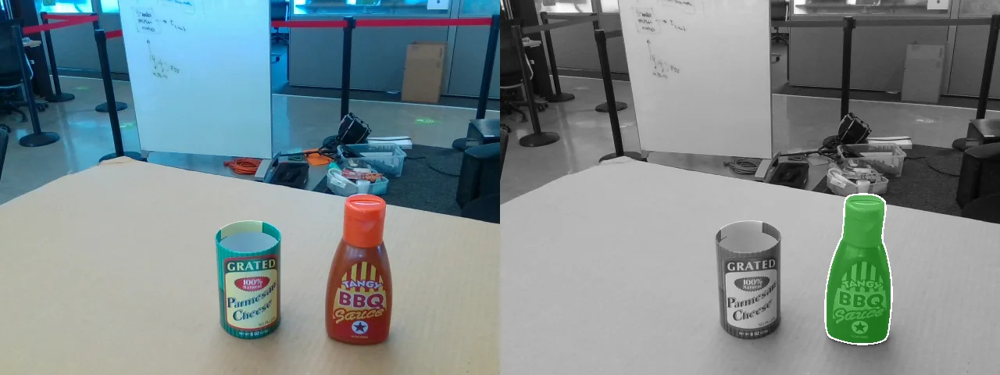
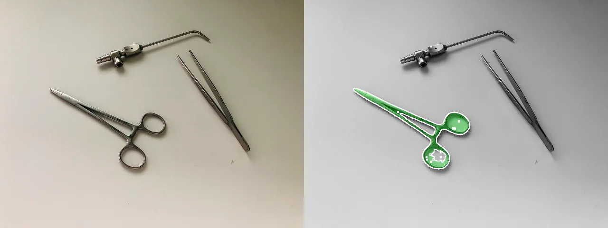
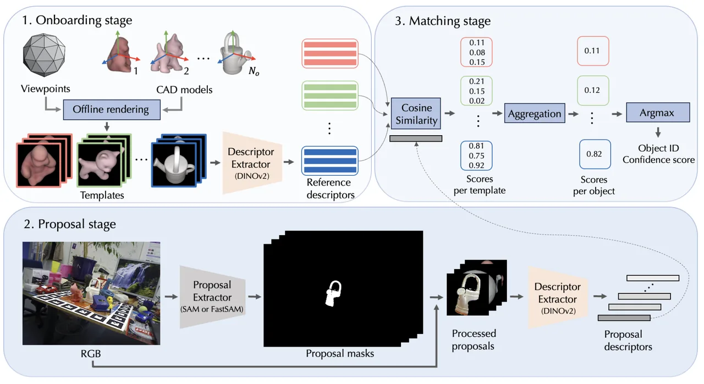

What Paradex does
A lab pipeline for seeing, recording, processing, and acting
Paradex is not one model or one demo script. It is the glue around a robot manipulation setup: it gets camera views and robot state into the same timeline, turns that recording into a calibrated dataset, and produces the checks needed before perception results are used to move a robot.
Run the robot setup
Main PC scripts coordinate camera computers, robot arms, robot hands, teleoperation devices, hardware sync, and per-machine config.
Build datasets
Capture sessions preserve raw videos/images, robot joint positions, hand actions, operator input, timestamps, calibration snapshots, and metadata.
Make data usable
Processing jobs sync streams, remove lens distortion, render overlays, extract masks, reconstruct objects, and upload derived outputs to shared storage.
Close the loop
Calibration, object pose, grasp transforms, motion feasibility checks, 3D previews, and robot overlays turn perception results into execution-ready evidence.
Plain-language terms
What the core Paradex words mean
The codebase uses robotics and computer-vision shorthand. These definitions keep the site readable without requiring prior knowledge of the lab setup.
Robot setup
The full physical experiment area: robot arm, hand, cameras, mounts, table, calibration board, lights, capture PCs, and shared storage.
Capture PC
A computer attached to one or more cameras. It runs camera services locally so the main PC can start, stop, and monitor recording remotely.
Synchronized capture
Recording camera frames, robot joint state, hand state, and operator input with timestamps so later processing can compare the same moment across devices.
Dataset
A saved experiment session plus metadata: raw images or videos, robot states, timestamps, calibration files, object labels, and processed outputs.
Calibration
Measuring how cameras see the world and where they are relative to the robot. This lets a pixel observation become a robot-frame position.
Camera-to-robot transform
Usually written as C2R. It is the coordinate conversion that says where a camera observation sits in the robot's coordinate system.
6D object pose
The object's 3D position plus its 3D rotation. A robot needs both to understand where the object is and how it is oriented.
Grasp transform
A proposed hand pose converted into the robot frame, so the robot can check whether the hand can reach and approach the object correctly.
IK
Inverse kinematics. Given a desired hand or tool pose, IK checks which robot joint angles could reach that pose.
NAS
Shared network storage used as the common place for raw recordings, cached inputs, processed results, and files exchanged between machines.
Latest upstream integrated
What changed in the current main
The fork now includes upstream changes through 48d6f039. The site
reflects the new runtime model instead of the older script-only view.
paradex.process
Reusable batch framework with Job, Ctx, skip-if-done, NAS cache, upload, progress, ETA, and distributed dispatch.
Processing apps migrated
miyungpa, upload_video, and object_turntable now run through workers/orchestrators built on paradex.process.
Capture transport
Publisher/Collector use a msgpack envelope with realtime PUB/SUB or lossless PUSH/PULL delivery.
Camera API
The live model is now image or acquire, with independent record, stream, snapshot, and parameter sinks.
Live camera tuning
src/util/camera_tuning/remote_tuner.py adjusts per-camera exposure/gain through running daemons and saves camera.json.
Docs expanded
Generated docs now cover calibration, dataset acquisition, image ops, process, camera protocol, transport, and scene visualization.
System path
Artifacts flow from robot setup state to robot action
Each stage publishes a concrete file, runtime state, or API contract that the next stage depends on. If camera placement, robot geometry, or file layout changes, the dependent stages should be regenerated.
Stage
Runtime owner
Contract
Calibrate robot setup
Main PC solvers and robot controllers
intrinsics.json, extrinsics.json, C2R.npy camera-to-robot transform, patched xArm URDFsAcquire camera data
remote_camera_controller plus capture-PC daemonsimage stills or acquire with record/stream/snapshot sinksRecord sessions
CaptureSession, robot, hand, teleop scriptsraw/ folders with videos, states, timestamps, metadata, and camera paramsProcess datasets
paradex.process workers and app-specific transformsSynced streams, overlays, contact outputs, masks, rotations, COLMAP models
Estimate and execute
object6d, grasp modules, robot GUI/controllerObject pose, robot-frame grasp, IK motion result, overlay/Viser validation
Runtime topology
What runs where
The current code separates orchestration, device ownership, data movement, and reusable library logic. This is the shortest useful map.
Main PC
- Owns orchestration scripts and generated result inspection.
- Drives
remote_camera_controller,run_distributed, calibration solvers, and inference. - Reads/writes NAS shared-storage roots through
shared_dirand local cache throughdownload_dir.
Capture PCs
- Run
src/camera/server_daemon.py. - Camera daemon ports: ping
5480, status5481, command5482. - Generic capture-PC channels: command
6890, data1234.
Robot and teleop
- Dataset scripts coordinate XArm, Allegro, Inspire, XSens, Oculus, and camera capture.
CaptureSessionwrites camera, arm, hand, teleop, timestamp, and state streams together.- Robot execution depends on the current
C2Rcamera-to-robot transform and xArm kinematic calibration.
Reusable libraries
paradex/io: camera, transport, robot, teleop IO.paradex/image:ImageDict, undistort, marker detection, projection, merge.paradex/visualization/scene: Viser/Open3D scene API for playback and exports.
Capture model
Two acquisition modes, independent sinks
New code should use remote_camera_controller. The daemon owns cameras;
callers choose still capture or continuous acquisition, then toggle outputs.
Distributed still images
Single-frame PySpin stills across the robot setup. Use for calibration and object-pose capture.
python src/camera/server_daemon.py
python src/capture/camera/image_remote.py \
--save_path object6d/session1Continuous acquisition
arm() starts acquisition. Recording, live preview, and snapshots are separate sinks.
rcc.arm(syncMode=False, fps=30)
rcc.set_stream(True)
rcc.set_record("capture/demo/raw", on=True)
rcc.snapshot("capture/demo/check", count=1)
rcc.set_record(on=False)
rcc.stop()
rcc.end()Dataset sessions
Session capture wraps camera, robot, hand, teleop, and metadata under one raw layout.
python src/dataset_acquisition/miyungpa/capture.py \
--name demo1 --arm xarm --hand allegro --device xsens
python src/dataset_acquisition/object_turntable/capture.py \
--name mugLive tuning and recovery
Adjust exposure/gain through daemons; monitor liveness before long recordings.
python src/util/camera_tuning/remote_tuner.py
python src/camera/monitor_daemon.py
python src/camera/reset_cameras.pyProcessing model
Batch jobs now share one framework
Concrete pipelines stay in src/process and src/util.
Shared lifecycle behavior lives in paradex.process.
Framework
Jobdescribes inputs, outputs, metadata, and completion checks.Ctxexposes cached inputs, output paths, and progress reporting.run_jobshandles skip, NAS cache, transform, upload, errors, and ETA.run_distributedandserve_jobsshard work across capture PCs.
from paradex.process import Job, run_jobs
jobs = discover()
run_jobs(jobs, process, num_workers=4)Live pipelines
src/process/miyungpa/
Robot-demo sync, overlays, contact outputs, dataset viewer.
src/process/object_turntable/
Video frames, Charuco, rotations, SAM3 masks, COLMAP reconstruction.
src/util/upload_video/
Raw-video undistort/upload worker built on the same processing contract.
python src/process/miyungpa/main.py
python src/process/object_turntable/worker.py
python src/util/upload_video/main.pyNAS samples
Result artifacts from shared_data/paradex
Small copied artifacts keep the site grounded in real outputs: object proposal examples from the perception stack and Inspire hand motion channels.


Inspire hand motion sample
Loaded from inspire_motion/time.npy, position.npy,
action.npy, and force.npy. The clip has 209 samples
over 9.98 seconds, six channels, position range 386-601, action range
400-800, and valid force range -1-80 after sentinel removal.

Single-object proposal
Input scene, grayscale context, and highlighted object proposal.

Thin-object proposal
A tool-shaped case for checking proposal quality before pose estimation.

Object stack context
The copied CNOS diagram maps CAD templates, RGB proposals, descriptor
extraction, and object-level matching to the object6d stage.
Validation and docs
Checks before long runs
The latest camera stack reports live errors, stalled frame ids, and sticky capture interruption. Treat those as stage gates, not logs to ignore.
Easy
Offline sanity checks
Start here when you want fast signal without moving hardware. This checks timeout behavior and the 3D viewer stack.
python src/validate/camera_system/hang_recovery_mock.py
python src/validate/visualizer/franka.py- Run on the main PC or any dev machine with the Paradex environment.
- Pass: mock recovery prints PASS; Viser prints a URL and renders the Franka URDF.
Medium
Main PC to capture PC transport
Use this before camera work. It validates SSH launch, telemetry return, and keyboard command delivery across capture PCs.
python src/validate/data_sender/main.py
python src/validate/command_sender/stream_remote.py- Run on the main PC; clients are SSH-launched on capture PCs.
- Pass: each PC prints increasing
{'value': seconds}data. - Controls:
cstart,sstop,qquit for command sender.
Medium+
Camera acquisition path
Run this after transport passes. It checks camera loading, live frames, remote recording, and the current daemon protocol.
python src/validate/camera_system/camera_loader.py
python src/validate/camera_system/camera_reader.py
python src/validate/camera_system/remote_camera_controller.py- Run on the main PC after camera daemons are up on capture PCs.
- Pass: no
get_all_errors()entries, live merged grid advances, Enter stops recording cleanly.
Hard
Sync and calibration quality
Use this when the dataset depends on accurate multi-camera timing and camera-to-robot geometry.
python src/validate/camera_system/sync_check.py --view
python src/validate/calibration/extrinsic_drift.py
python src/validate/calibration/compare_xarm_kinematic_calib.py --no_overlay- Run sync checks with hardware trigger available; run calibration checks on existing hand-eye sessions.
- Pass: frame IDs stay within tolerance; per-camera drift is small; calibrated URDF lowers residuals.
Hard+
Robot and hand execution
Reserve this for cleared workspaces. It validates real motion, hand command tracking, and camera/robot overlay alignment.
python src/validate/robot/xarm_base_wiggle.py
python src/validate/robot/inspire_left.py
python src/validate/robot/inspire_left_overlay.py- Run only with the correct robot connected and the workspace clear.
- Pass: arm motion is smooth, reported hand angles track targets, overlay mesh aligns with images.
Data
Processed video and NAS upload
Use this after a capture session exists. It checks raw video undistortion, progress reporting, and shared-storage upload.
python src/validate/upload_raw_video/upload_local.py
# For one file, edit the hardcoded path first:
python src/validate/upload_raw_video/test_func.py- No robot motion required; raw videos and camera intrinsics must exist.
- Pass: frames are processed, ETA advances, and the run ends with completed/success.
Camera health
- Start or reset daemons before distributed capture.
- Watch
rcc.get_status()during long recordings. - Abort or restart when
capture_interrupted()latches.
Geometry health
- Refresh downstream calibration when camera placement or robot geometry changes.
- Validate
C2R.npycamera-to-robot alignment with robot overlays before execution. - Use
ImageDictand projection helpers for repeatable checks.
Processing health
- Define explicit
Job.donechecks when output presence is not enough. - Use framework progress for long frame-level work.
- Keep NAS shared-storage paths in jobs and local-only paths inside transforms.
Franka setup
Current FR3 support status, setup path, and selective porting plan from origin/vlm_dex.
docs/
Generated Sphinx guide and API reference for the current fork.
agent_docs/
Subsystem routing notes for agents and maintainers.
paradex/process
Reusable batch framework used by current processing apps.
io/capture_pc
ZMQ command/data transport between the main PC and capture PCs.
camera_system
Remote daemon protocol, health telemetry, and controller API.
visualization/scene
Backend-agnostic Viser/Open3D scene and animation API.